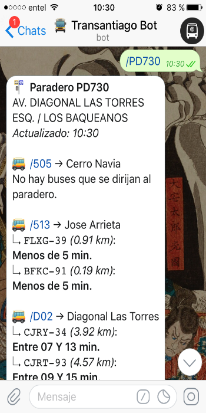
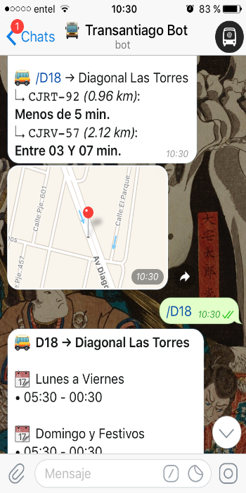

@transantiago_bot
Paraderos y recorridos del Transantiago.
Consulta los paraderos cercanos a ti, las micros que pasan por ahí junto con sus tiempos aproximados y sus recorridos completos
Consulta los paraderos cercanos a ti, las micros que pasan por ahí junto con sus tiempos aproximados y sus recorridos completos